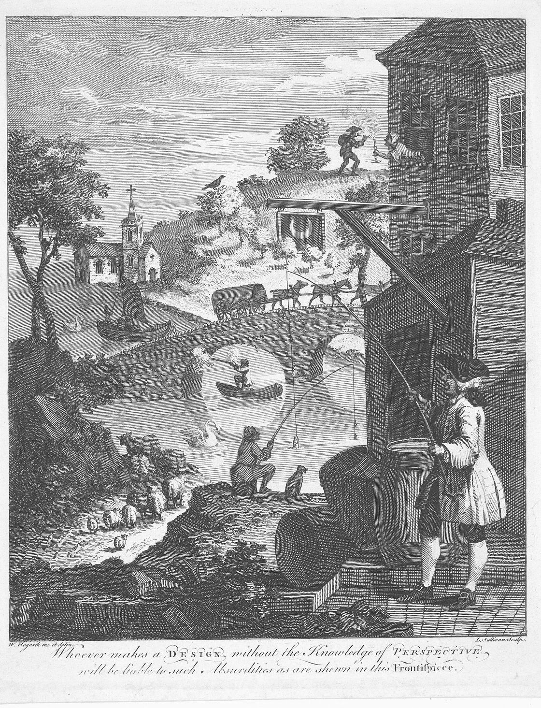

Mayurdeep Pathak
Indian Institute of Science, Bangalore

I am Mayurdeep Pathak. I think about the world in three dimensions, which is a little inconvenient, since I mostly look at it through flat screens.
I am a graduate student at the Indian Institute of Science, Bangalore, in the Visual Information Processing Lab with Prof. Rajiv Soundararajan. Before that I studied computer science at Jorhat Engineering College. Dibrugarh, a town on the Brahmaputra in Assam, is home.
What keeps pulling me in is the gap between a photograph and the place it was taken. A photograph keeps one viewpoint and one instant, and I have always wanted the rest. That led me to 3D vision: rebuilding a scene from a handful of cameras so you can walk around a moment after it has happened. I am drawn most to scenes that move, because that is where the problem is hardest and the most fun.
In short: give me a few pictures of something, and I will try to give you back the thing.
Interests: 3D vision, dynamic scene reconstruction, novel view synthesis, image and video processing.
Publications
- Sustaining Reconstruction Quality in Long-Duration Dynamic 3D Gaussian Splatting Mayurdeep Pathak, Vikram Sandu, Rajiv Soundararajan Project page
- Temporally Aware Densification for Dynamic 3D Gaussian Splatting Vikram Sandu, Mayurdeep Pathak, Rajiv Soundararajan ECCV 2026 · Project page · arXiv
- GlobeMetrics: A Healthcare Framework for Video Based Saccade Characterization Debanga Raj Neog, Pharvesh Salman Choudhary, Mayurdeep Pathak IEEE CAI 2024